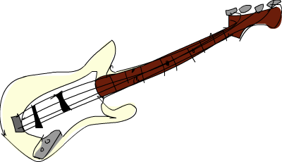

Functors, Applicative Functors與Monoids
Haskell的一些特色，像是純粹性，高階函數，algebraic data types，typeclasses，這些讓我們可以從更高的角度來看到polymorphism這件事。不像OOP當中需要從龐大的型態階層來思考。我們只需要看看手邊的型態的行為，將他們跟適當地typeclass對應起來就可以了。像Int的行為跟很多東西很像。好比說他可以比較相不相等，可以從大到小排列，也可以將他們一一窮舉出來。
Typeclass的運用是很隨意的。我們可以定義自己的資料型態，然後描述他可以怎樣被操作，跟typeclass關聯起來便定義了他的行為。由於Haskell強大的型態系統，這讓我們只要讀函數的型態宣告就可以知道很多資訊。typeclass可以定義得很抽象很general。我們之前有看過typeclass定義了可以比較兩個東西是否相等，或是定義了可以比較兩個東西的大小。這些是既抽象但又描述簡潔的行為，但我們不會認為他們有什麼特別之處，因為我們時常碰到他們。最近我們看過了functor，基本上他們是一群可以被map over的物件。這是其中一個例子能夠抽象但又漂亮地描述行為。在這一章中，我們會詳加闡述functors，並會提到比較強一些的版本，也就是applicative functors。我們也會提到monoids。
溫習Functors

我們已經在之前的章節提到functors。如果你還沒讀那個章節，也許你應該先去看看。或是你直接假裝你已經讀過了。
來快速複習一下：Functors是可以被map over的物件，像是lists，Maybe，trees等等。在Haskell中我們是用Functor這個typeclass來描述他。這個typeclass只有一個method，叫做fmap，他的型態是fmap :: (a -> b) -> fa -> f b。這型態說明了如果給我一個從a映到b的函數，以及一個裝了a的盒子，我會回給你一個裝了b的盒子。就好像用這個函數將每個元素都轉成b一樣
給一點建議。這盒子的比喻嘗試讓你抓到些functors是如何運作的感覺。在之後我們也會用相同的比喻來比喻applicative functors跟monads。在多數情況下這種比喻是恰當的，但不要過度引申，有些functors是不適用這個比喻的。一個比較正確的形容是functors是一個計算語境(computational context)。這個語境可能是這個computation可能帶有值，或是有可能會失敗(像
Maybe跟Either a)，或是他可能有多個值(像lists)，等等。
如果一個type constructor要是Functor的instance，那他的kind必須是* -> *，這代表他必須剛好接受一個type當作type parameter。像是Maybe可以是Functor的一個instance，因為他接受一個type parameter，來做成像是Maybe Int，或是Maybe String。如果一個type constructor接受兩個參數，像是Either，我們必須給他兩個type parameter。所以我們不能這樣寫：instance Functor Either where，但我們可以寫instance Functor (Either a) where，如果我們把fmap限縮成只是Either a的，那他的型態就是fmap :: (b -> c) -> Either a b -> Either a c。就像你看到的，Either a的是固定的一部分，因為Either a只恰好接受一個type parameter，但Either則要接球兩個type parameters。這樣fmap的型態變成fmap :: (b -> c) -> Either b -> Either c，這不太合理。
我們知道有許多型態都是Functor的instance，像是[]，Maybe，Either a以及我們自己寫的Tree。我們也看到了如何用一個函數map他們。在這一章節，我們再多舉兩個例子，也就是IO跟(->) r。
如果一個值的型態是IO String，他代表的是一個會被計算成String結果的I/O action。我們可以用do syntax來把結果綁定到某個名稱。我們之前把I/O action比喻做長了腳的盒子，會到真實世界幫我們取一些值回來。我們可以檢視他們取了什麼值，但一旦看過，我們必須要把值放回盒子中。用這個比喻，IO的行為就像是一個functor。
我們來看看IO是怎麼樣的一個Functorinstance。當我們fmap用一個function來map over I/O action時，我們會想要拿回一個裝著已經用function映射過值的I/O action。
instance Functor IO where
fmap f action = do
result <- action
return (f result)對一個I/O action做map over動作的結果仍會是一個I/O action，所以我們才用do syntax來把兩個I/O action黏成一個。在fmap的實做中，我們先執行了原本傳進的I/O action，並把結果綁定成result。然後我們寫了return (f result)。return就如你所知道的，是一個只會回傳包了你傳給他東西的I/O action。還有一個do block的回傳值一定是他最後一個I/O action的回傳值。這也是為什麼我們需要return。其實他只是回傳包了f result的I/O action。
我們可以再多實驗一下來找到些感覺。來看看這段code：
main = do line <- getLine
let line' = reverse line
putStrLn $ "You said " ++ line' ++ " backwards!"
putStrLn $ "Yes, you really said" ++ line' ++ " backwards!"這程式要求使用者輸入一行文字，然後印出一行反過來的。
我們可以用fmap來改寫：
main = do line <- fmap reverse getLine
putStrLn $ "You said " ++ line ++ " backwards!"
putStrLn $ "Yes, you really said" ++ line ++ " backwards!"就像我們用fmapreverse來map overJust "blah"會得到Just "halb"，我們也可以fmapreverse來map overgetLine。getLine是一個I/O action，他的type是IO String，而用reverse來map over他會回傳一個取回一個字串並reverse他的I/O action。就像我們apply一個function到一個Maybe一樣，我們也可以apply一個function到一個IO，只是這個IO會跑去外面拿回某些值。然後我們把結果用<-綁定到某個名稱，而這個名稱綁定的值是已經reverse過了。
而fmap (++"!") getLine這個I/O action表現得就像getLine，只是他的結果多了一個"!"在最後。
如果我們限縮fmap到IO型態上，那fmap的型態是fmap :: (a -> b) -> IO a -> IO b。fmap接受一個函數跟一個I/O action，並回傳一個I/O action包含了已經apply過function的結果。
如果你曾經注意到你想要將一個I/O action綁定到一個名稱上，只是為了要apply一個function。你可以考慮使用fmap，那會更漂亮地表達這件事。或者你想要對functor中的資料做transformation，你可以先將你要用的function寫在top level，或是把他作成一個lambda function，甚至用function composition。
import Data.Char
import Data.List
main = do line <- fmap (intersperse '-' . reverse . map toUpper) getLine
putStrLn line$ runhaskell fmapping_io.hs hello there E-R-E-H-T- -O-L-L-E-H
正如你想的，intersperse '-' . reverse . map toUpper合成了一個function，他接受一個字串，將他轉成大寫，然後反過來，再用intersperse '-'安插'-'。他是比較漂亮版本的(\xs -> intersperse '-' (reverse (map toUpper xs)))。
另一個Functor的案例是(->) r，只是我們先前沒有注意到。你可能會困惑到底(->) r究竟代表什麼？一個r -> a的型態可以寫成(->) r a，就像是2 + 3可以寫成(+) 2 3一樣。我們可以從一個不同的角度來看待(->) r a，他其實只是一個接受兩個參數的type constructor，好比Either。但記住我們說過Functor只能接受一個type constructor。這也是為什麼(->)不是Functor的一個instance，但(->) r則是。如果程式的語法允許的話，你也可以將(->) r寫成(r ->)。就如(2+)代表的其實是(+) 2。至於細節是如何呢？我們可以看看Control.Monad.Instances。
我們通常說一個接受任何東西以及回傳隨便一個東西的函數型態是
a -> b。r -> a是同樣意思，只是把符號代換了一下。
instance Functor ((->) r) where
fmap f g = (\x -> f (g x))如果語法允許的話，他可以被寫成
instance Functor (r ->) where
fmap f g = (\x -> f (g x))但其實是不允許的，所以我們必須寫成第一種的樣子。
首先我們來看看fmap的型態。他的型態是fmap :: (a -> b) -> f a -> f b。我們把所有的f在心裡代換成(->) r。則fmap的型態就變成fmap :: (a -> b) -> ((->) r a) -> ((->) r b)。接著我們把(->) r a跟(->) r b換成r -> a跟r -> b。則我們得到fmap :: (a -> b) -> (r -> a) -> (r -> b)。
從上面的結果看到將一個function map over一個function會得到另一個function，就如map over一個function到Maybe會得到一個Maybe，而map over一個function到一個list會得到一個list。而fmap :: (a -> b) -> (r -> a) -> (r -> b)告訴我們什麼？他接受一個從a到b的function，跟一個從r到a的function，並回傳一個從r到b的function。這根本就是function composition。把r -> a的輸出接到a -> b的輸入，的確是function composition在做的事。如果你再仔細看看instance的定義，會發現真的就是一個function composition。
instance Functor ((->) r) where
fmap = (.)這很明顯就是把fmap當composition在用。可以用:m + Control.Monad.Instances把模組裝載進來，並做一些嘗試。
ghci> :t fmap (*3) (+100) fmap (*3) (+100) :: (Num a) => a -> a ghci> fmap (*3) (+100) 1 303 ghci> (*3) `fmap` (+100) $ 1 303 ghci> (*3) . (+100) $ 1 303 ghci> fmap (show . (*3)) (*100) 1 "300"
我們呼叫fmap的方式是infix的方式，這跟.很像。在第二行，我們把(*3)map over到(+100)上，這會回傳一個先把輸入值(+100)再(*3)的function，我們再用1去呼叫他。
到這邊為止盒子的比喻還適用嗎？如果你硬是要解釋的話還是解釋得通。當我們將fmap (+3)map overJust 3的時候，對於Maybe我們很容易把他想成是裝了值的盒子，我們只是對盒子裡面的值(+3)。但對於fmap (*3) (+100)呢？你可以把(+100)想成是一個裝了值的盒子。有點像把I/O action想成長了腳的盒子一樣。對(+100)使用fmap (*3)會產生另一個表現得像(+100)的function。只是在算出值之前，會再多計算(*3)。這樣我們可以看出來fmap表現得就像.一樣。
fmap等同於function composition這件事對我們來說並不是很實用，但至少是一個有趣的觀點。這也讓我們打開視野，看到盒子的比喻不是那麼恰當，functors其實比較像computation。function被map over到一個computation會產生經由那個function映射過後的computation。

在我們繼續看fmap該遵守的規則之前，我們再看一次fmap的型態，他是fmap :: (a -> b) -> f a -> f b。很明顯我們是在討論Functor，所以為了簡潔，我們就不寫(Functor f) =>的部份。當我們在學curry的時候，我們說過Haskell的function實際上只接受一個參數。一個型態是a -> b -> c的函數實際上是接受a然後回傳b -> c，而b -> c實際上接受一個b然後回傳一個c。如果我們用比較少的參數呼叫一個函數，他就會回傳一個函數需要接受剩下的參數。所以a -> b -> c可以寫成a -> (b -> c)。這樣curry可以明顯一些。
同樣的，我們可以不要把fmap想成是一個接受function跟functor並回傳一個function的function。而是想成一個接受function並回傳一個新的function的function，回傳的function接受一個functor並回傳一個functor。他接受a -> b並回傳f a -> f b。這動作叫做lifting。我們用GHCI的:t來做的實驗。
ghci> :t fmap (*2) fmap (*2) :: (Num a, Functor f) => f a -> f a ghci> :t fmap (replicate 3) fmap (replicate 3) :: (Functor f) => f a -> f [a]
fmap (*2)接受一個functorf，並回傳一個基於數字的functor。那個functor可以是list，可以是Maybe，可以是Either String。fmap (replicate 3)可以接受一個基於任何型態的functor，並回傳一個基於list的functor。
當我們提到functor over numbers的時候，你可以想像他是一個functor包含有許多數字在裡面。前面一種說法其實比較正確，但後面一種說法比較容易讓人理解。
這樣的觀察在我們只有綁定一個部份套用的函數，像是fmap (++"!")，的時候會顯得更清楚，
你可以把fmap想做是一個函數，他接受另一個函數跟一個functor，然後把函數對functor每一個元素做映射，或你可以想做他是一個函數，他接受一個函數並把他lift到可以在functors上面操作。兩種想法都是正確的，而且在Haskell中是等價。
fmap (replicate 3) :: (Functor f) => f a -> f [a]這樣的型態代表這個函數可以運作在任何functor上。至於確切的行為則要看究竟我們操作的是什麼樣的functor。如果我們是用fmap (replicate 3)對一個list操作，那我們會選擇fmap針對list的實作，也就是只是一個map。如果我們是碰到Maybe a。那他在碰到Just型態的時候，會對裡面的值套用replicate 3。而碰到Nothing的時候就回傳Nothing。
ghci> fmap (replicate 3) [1,2,3,4] [[1,1,1],[2,2,2],[3,3,3],[4,4,4]] ghci> fmap (replicate 3) (Just 4) Just [4,4,4] ghci> fmap (replicate 3) (Right "blah") Right ["blah","blah","blah"] ghci> fmap (replicate 3) Nothing Nothing ghci> fmap (replicate 3) (Left "foo") Left "foo"
接下來我們來看看functor laws。一個東西要成為functor，必須要遵守某些定律。不管任何一個functor都被要求具有某些性質。他們必須是能被map over的。對他們呼叫fmap應該是要用一個函數map每一個元素，不多做任何事情。這些行為都被functor laws所描述。對於Functor的instance來說，總共兩條定律應該被遵守。不過他們不會在Haskell中自動被檢查，所以你必須自己確認這些條件。
functor law的第一條說明，如果我們對functor做mapid，那得到的新的functor應該要跟原來的一樣。如果寫得正式一點，他代表fmap id = id。基本上他就是說對functor呼叫fmap id，應該等同於對functor呼叫id一樣。畢竟id只是identity function，他只會把參數照原樣丟出。他也可以被寫成\x -> x。如果我們對functor的概念就是可以被map over的物件，那fmap id = id的性就顯而易見。
我們來看看這個定律的幾個案例：
ghci> fmap id (Just 3) Just 3 ghci> id (Just 3) Just 3 ghci> fmap id [1..5] [1,2,3,4,5] ghci> id [1..5] [1,2,3,4,5] ghci> fmap id [] [] ghci> fmap id Nothing Nothing
如果我們看看Maybe的fmap的實作，我們不難發現第一定律為何被遵守。
instance Functor Maybe where
fmap f (Just x) = Just (f x)
fmap f Nothing = Nothing我們可以想像在f的位置擺上id。我們看到fmap id拿到Just x的時候，結果只不過是Just (id x)，而id有只回傳他拿到的東西，所以可以知道Just (id x)等價於Just x。所以說我們可以知道對Maybe中的Just用id去做map over的動作，會拿回一樣的值。
而將idmap overNothing會拿回Nothing並不稀奇。所以從這兩個fmap的實作，我們可以看到的確fmap id = id有被遵守。

第二定律描述說先將兩個函數合成並將結果map over一個functor的結果，應該跟先將第一個函數map over一個functor，再將第二個函數map over那個functor的結果是一樣的。正式地寫下來的話就是fmap (f . g) = fmap f . fmap g。或是用另外一種寫法，對於任何一個functor F，下面這個式子應該要被遵守：fmap (f . g) F = fmap f (fmap g F)v
如果我們能夠證明某個型別遵守兩個定律，那我們就可以保證他跟其他functor對於映射方面都擁有相同的性質。我們知道如果對他用fmap，我們知道不會有除了mapping以外的事會發生，而他就僅僅會表現成某個可以被map over的東西。也就是一個functor。你可以再仔細檢視fmap對於某些型別的實作來了解第二定律。正如我們先前對Maybe檢視第一定律一般。
如果你需要的話，我們能在這邊演練一下Maybe是如何遵守第二定律的。首先fmap (f . g)來map overNothing的話，我們會得到Nothing。因為用任何函數來fmapNothing的話都會回傳Nothing。如果我們fmap f (fmap g Nothing)，我們會得到Nothing。可以看到當面對Nothing的時候，Maybe很顯然是遵守第二定律的。
那對於Just something呢？如果我們使用fmap (f . g) (Just x)的話，從實作的程式碼中我可以看到Just ((f . g ) x)，也就是Just (f (g x))。如果我們使用fmap f (fmap g (Just x))的話我們可以從實作知道fmap g (Just x)會是Just (g x)。fmap f (fmap g (Just x))跟fmap f (Just (g x))相等。而從實作上這又會相等於Just (f (g x))。
如果你不太理解這邊的說明，別擔心。只要確定你了解什麼是函數合成就好。在多數的情況下你可以直覺地對應到這些型別表現得就像containers或函數一樣。或是也可以換種方法，只要多嘗試對型別中不同的值做操作你就可以看看型別是否有遵守定律。
我們來看一些經典的例子。這些型別建構子雖然是Functor的instance，但實際上他們並不是functor，因為他們並不遵守這些定律。我們來看看其中一個型別。
data CMaybe a = CNothing | CJust Int a deriving (Show)
C這邊代表的是計數器。他是一種看起來像是Maybe a的型別，只差在Just包含了兩個field而不是一個。在CJust中的第一個field是Int，他是扮演計數器用的。而第二個field則為型別a，他是從型別參數來的，而他確切的型別當然會依據我們選定的CMaybe a而定。我們來對他作些操作來獲得些操作上的直覺吧。
ghci> CNothing CNothing ghci> CJust 0 "haha" CJust 0 "haha" ghci> :t CNothing CNothing :: CMaybe a ghci> :t CJust 0 "haha" CJust 0 "haha" :: CMaybe [Char] ghci> CJust 100 [1,2,3] CJust 100 [1,2,3]
如果我們使用CNothing，就代表不含有field。如果我們用的是CJust，那第一個field是整數，而第二個field可以為任何型別。我們來定義一個Functor的instance，這樣每次我們使用fmap的時候，函數會被套用在第二個field，而第一個field會被加一。
instance Functor CMaybe where
fmap f CNothing = CNothing
fmap f (CJust counter x) = CJust (counter+1) (f x)這種定義方式有點像是Maybe的定義方式，只差在當我們使用fmap的時候，如果碰到的不是空值，那我們不只會套用函數，還會把計數器加一。我們可以來看一些範例操作。
ghci> fmap (++"ha") (CJust 0 "ho") CJust 1 "hoha" ghci> fmap (++"he") (fmap (++"ha") (CJust 0 "ho")) CJust 2 "hohahe" ghci> fmap (++"blah") CNothing CNothing
這些會遵守functor laws嗎？要知道有不遵守的情形，只要找到一個反例就好了。
ghci> fmap id (CJust 0 "haha") CJust 1 "haha" ghci> id (CJust 0 "haha") CJust 0 "haha"
我們知道functor law的第一定律描述當我們用id來map over一個functor的時候，他的結果應該跟只對functor呼叫id的結果一樣。但我們可以看到這個例子中，這對於CMaybe並不遵守。儘管他的確是Functortypeclass的一個instace。但他並不遵守functor law因此不是一個functor。如果有人使用我們的CMaybe型別，把他當作functor用，那他就會期待functor laws會被遵守。但CMaybe並沒辦法滿足，便會造成錯誤的程式。當我們使用一個functor的時候，函數合成跟map over的先後順序不應該有影響。但對於CMaybe他是有影響的，因為他紀錄了被map over的次數。如果我們希望CMaybe遵守functor law，我們必須要讓Int欄位在做fmap的時候維持不變。
乍看之下functor laws看起來不是很必要，也容易讓人搞不懂，但我們知道如果一個型別遵守functor laws，那我們就能對他作些基本的假設。如果遵守了functor laws，我們知道對他做fmap不會做多餘的事情，只是用一個函數做映射而已。這讓寫出來的程式碼足夠抽象也容易擴展。因為我們可以用定律來推論型別的行為。
所有在標準函式庫中的Functor的instance都遵守這些定律，但你可以自己檢查一遍。下一次你定義一個型別為Functor的instance的時候，花點時間確認他確實遵守functor laws。一旦你操作過足夠多的functors時，你就會獲得直覺，知道他們會有什麼樣的性質跟行為。而且functor laws也會覺得顯而易見。但就算沒有這些直覺，你仍然可以一行一行地來找看看有沒有反例讓這些定律失效。
我們可以把functor看作輸出具有context的值。例如說Just 3就是輸出3，但他又帶有一個可能沒有值的context。[1,2,3]輸出三個值，1,2跟3，同時也帶有可能有多個值或沒有值的context。(+3)則會帶有一個依賴於參數的context。
如果你把functor想做是輸出值這件事，那你可以把map over一個functor這件事想成在functor輸出的後面再多加一層轉換。當我們做fmap (+3) [1,2,3]的時候，我們是把(+3)接到[1,2,3]後面，所以當我們檢視任何一個list的輸出的時候，(+3)也會被套用在上面。另一個例子是對函數做map over。當我們做fmap (+3) (*3)，我們是把(+3)這個轉換套用在(*3)後面。這樣想的話會很自然就會把fmap跟函數合成關聯起來（fmap (+3) (*3)等價於(+3) . (*3)`，也等價於\x -> ((x3)+3)），畢竟我們是接受一個函數(3)然後套用(+3)轉換。最後的結果仍然是一個函數，只是當我們餵給他一個數字的時候，他會先乘上三然後做轉換加上三。這基本上就是函數合成在做的事。
Applicative functors
在這個章節中，我們會學到applicative functors，也就是加強版的functors，在Haskell中是用在Control.Applicative中的Applicative這個typeclass來定義的。
你還記得Haskell中函數預設就是Curried的，那代表接受多個參數的函數實際上是接受一個參數然後回傳一個接受剩餘參數的函數，以此類推。如果一個函數的型別是a -> b -> c，我們通常會說這個函數接受兩個參數並回傳c，但他實際上是接受a並回傳一個b -> c的函數。這也是為什麼我們可以用(f x) y的方式呼叫f x y。這個機制讓我們可以partially apply一個函數，可以用比較少的參數呼叫他們。可以做成一個函數再餵給其他函數。
到目前為止，當我們要對functor map over一個函數的時候，我們用的函數都是只接受一個參數的。但如果我們要map一個接受兩個參數的函數呢？我們來看幾個具體的例子。如果我們有Just 3然後我們做fmap (*) (Just 3)，那我們會獲得什麼樣的結果？從Maybe對Functor的instance實作來看，我們知道如果他是Just something，他會對在Just中的something做映射。因此當fmap (*) (Just 3)會得到Just ((*) 3)，也可以寫做Just (* 3)。我們得到了一個包在Just中的函數。
ghci> :t fmap (++) (Just "hey") fmap (++) (Just "hey") :: Maybe ([Char] -> [Char]) ghci> :t fmap compare (Just 'a') fmap compare (Just 'a') :: Maybe (Char -> Ordering) ghci> :t fmap compare "A LIST OF CHARS" fmap compare "A LIST OF CHARS" :: [Char -> Ordering] ghci> :t fmap (\x y z -> x + y / z) [3,4,5,6] fmap (\x y z -> x + y / z) [3,4,5,6] :: (Fractional a) => [a -> a -> a]
如果我們mapcompare到一個包含許多字元的list呢？他的型別是(Ord a) => a -> a -> Ordering，我們會得到包含許多Char -> Ordering型別函數的list，因為compare被partially apply到list中的字元。他不是包含許多(Ord a) => a -> Ordering的函數，因為第一個a碰到的型別是Char，所以第二個a也必須是Char。
我們看到如何用一個多參數的函數來map functor，我們會得到一個包含了函數的functor。那現在我們能對這個包含了函數的functor做什麼呢？我們能用一個吃這些函數的函數來map over這個functor，這些在functor中的函數都會被當作參數丟給我們的函數。
ghci> let a = fmap (*) [1,2,3,4] ghci> :t a a :: [Integer -> Integer] ghci> fmap (\f -> f 9) a [9,18,27,36]
但如果我們的有一個functor裡面是Just (3 *)還有另一個functor裡面是Just 5，但我們想要把第一個Just (3 *)map overJust 5呢？如果是普通的functor，那就沒救了。因為他們只允許map一個普通的函數。即使我們用\f -> f 9來map一個裝了很多函數的functor，我們也是使用了普通的函數。我們是無法單純用fmap來把包在一個functor的函數map另一個包在functor中的值。我們能用模式匹配Just來把函數從裡面抽出來，然後再mapJust 5，但我們是希望有一個一般化的作法，對任何functor都有效。
我們來看看Applicative這個typeclass。他位在Control.Applicative中，在其中定義了兩個函數pure跟<*>。他並沒有提供預設的實作，如果我們想使用他必須要為他們applicative functor的實作。typeclass定義如下：
class (Functor f) => Applicative f where
pure :: a -> f a
(<*>) :: f (a -> b) -> f a -> f b這簡簡單單的三行可以讓我們學到不少。首先來看第一行。他開啟了Applicative的定義，並加上class contraint。描述了一個型別構造子要是Applicative，他必須也是Functor。這就是為什麼我們說一個型別構造子屬於Applicative的話，他也會是Functor，因此我們能對他使用fmap。
第一個定義的是pure。他的型別宣告是pure :: a -> f a。f代表applicative functor的instance。由於Haskell有一個優秀的型別系統，其中函數又是將一些參數映射成結果，我們可以從型別宣告中讀出許多訊息。pure應該要接受一個值，然後回傳一個包含那個值的applicative functor。我們這邊是用盒子來作比喻，即使有一些比喻不完全符合現實的情況。儘管這樣，a -> f a仍有許多豐富的資訊，他確實告訴我們他會接受一個值並回傳一個applicative functor，裡面裝有結果。
對於pure比較好的書法是把一個普通值放到一個預設的context下，一個最小的context但仍然包含這個值。
<*>也非常有趣。他的型別是f (a -> b) -> f a -> f b。這有讓你聯想到什麼嗎？沒錯！就是fmap :: (a -> b) -> f a -> f b。他有點像加強版的fmap。然而fmap接受一個函數跟一個functor，然後套用functor之中的函數。<*>則是接受一個裝有函數的functor跟另一個functor，然後取出第一個functor中的函數將他對第二個functor中的值做map。
我們來看看Maybe的Applicative實作：
instance Applicative Maybe where
pure = Just
Nothing <*> _ = Nothing
(Just f) <*> something = fmap f something從class的定義我們可以看到f作為applicative functor會接受一個具體型別當作參數，所以我們是寫成instance Applicative Maybe where而不是寫成instance Applicative (Maybe a) where。
首先看到pure。他只不過是接受一個東西然後包成applicative functor。我們寫成pure = Just是因為Just不過就是一個普通函數。我們其實也可以寫成pure x = Just x。
接著我們定義了<*>。我們無法從Nothing中抽出一個涮，因為Nothing並不包含一個函數。所以我們說如果我們要嘗試從Nothing中取出一個函數，結果必定是Nothing。如果你看看Applicative的定義，你會看到他有Functor的限制，他代表<*>的兩個參數都會是functors。如果第一個參數不是Nothing，而是一個裝了函數的Just，而且我們希望將這個函數對第二個參數做map。這個也考慮到第二個參數是Nothing的情況，因為fmap任何一個函數至Nothing會回傳Nothing。
對於Maybe而言，如果左邊是Just，那<*>會從其中抽出了一個函數來map右邊的值。如果有任何一個參數是Nothing。那結果便是Nothing。
來試試看吧！
ghci> Just (+3) <*> Just 9 Just 12 ghci> pure (+3) <*> Just 10 Just 13 ghci> pure (+3) <*> Just 9 Just 12 ghci> Just (++"hahah") <*> Nothing Nothing ghci> Nothing <*> Just "woot" Nothing
我們看到pure (+3)跟Just (+3)在這個case下是一樣的。如果你是在applicative context底下跟Maybe打交道的話請用pure，要不然就用Just。前四個輸入展示了函數是如何被取出並做map的動作，但在這個case底下，他們同樣也可以用unwrap函數來map over functors。最後一行比較有趣，因為我們試著從Nothing取出函數並將他map到某個值。結果當然是Nothing。
對於普通的functors，你可以用一個函數map over一個functors，但你可能沒辦法拿到結果。而applicative functors則讓你可以用單一一個函數操作好幾個functors。看看下面一段程式碼：
ghci> pure (+) <*> Just 3 <*> Just 5 Just 8 ghci> pure (+) <*> Just 3 <*> Nothing Nothing ghci> pure (+) <*> Nothing <*> Just 5 Nothing

究竟我們寫了些什麽？我們來一步步看一下。<*>是left-associative，也就是說pure (+) <*> Just 3 <*> Just 5可以寫成(pure (+) <*> Just 3) <*> Just 5。首先+是擺在一個functor中，在這邊剛好他是一個Maybe。所以首先，我們有pure (+)，他等價於Just (+)。接下來由於partial application的關係，Just (+) <*> Just 3等價於Just (3+)。把一個3餵給+形成另一個只接受一個參數的函數，他的效果等於加上3。最後Just (3+) <*> Just 5被運算，其結果是Just 8。
這樣很棒吧！用applicative style的方式來使用applicative functors。像是pure f <*> x <*> y <*> ...就讓我們可以拿一個接受多個參數的函數，而且這些參數不一定是被包在functor中。就這樣來套用在多個在functor context的值。這個函數可以吃任意多的參數，畢竟<*>只是做partial application而已。
如果我們考慮到pure f <*> x等於fmap f x的話，這樣的用法就更方便了。這是applicative laws的其中一條。我們稍後會更仔細地檢視這條定律。現在我們先依直覺來使用他。就像我們先前所說的，pure把一個值放進一個預設的context中。如果我們要把一個函數放在一個預設的context，然後把他取出並套用在放在另一個applicative functor的值。我們會做的事就是把函數map over那個applicative functor。但我們不會寫成pure f <*> x <*> y <*> ...，而是寫成fmap f x <*> y <*> ...。這也是為什麽Control.Aaplicative會export一個函數<$>，他基本上就是中餟版的fmap。他是這麼被定義的：
(<$>) :: (Functor f) => (a -> b) -> f a -> f b f <$> x = fmap f x
要記住型別變數跟參數的名字還有值綁定的名稱不衝突。
f在函數的型別宣告中是型別變數，說名f應該要滿足Functortypeclass的條件。而在函數本體中的f則表示一個函數，我們將他map over x。我們同樣用f來表示他們並代表他們是相同的東西。
<$>的使用顯示了applicative style的好處。如果我們想要將f套用三個applicative functor。我們可以寫成f <$> x <*> y <*> z。如果參數不是applicative functor而是普通值的話。我們則寫成f x y z。
我們再仔細看看他是如何運作的。我們有一個Just "johntra"跟Just "volta"這樣的值，我們希望將他們結合成一個String，並且包含在Maybe中。我們會這樣做：
ghci> (++) <$> Just "johntra" <*> Just "volta" Just "johntravolta"
可以將上面的跟下面這行比較一下：
ghci> (++) "johntra" "volta" "johntravolta"
可以將一個普通的函數套用在applicative functor上真不錯。只要稍微寫一些<$>跟<*>就可以把函數變成applicative style，可以操作applicatives並回傳applicatives。
總之當我們在做(++) <$> Just "johntra" <*> Just "volta"時，首先我們將(++)map over到Just "johntra"，然後產生Just ("johntra"++)，其中(++)的型別為(++) :: [a] -> [a] -> [a]，Just ("johntra"++)的型別為Maybe ([Char] -> [Char])。注意到(++)是如何吃掉第一個參數，以及我們是怎麼決定a是Char的。當我們做Just ("johntra"++) <*> Just "volta"，他接受一個包在Just中的函數，然後map overJust "volta"，產生了Just "johntravolta"。如果兩個值中有任意一個為Nothing，那整個結果就會是Nothing。
到目前為止我們只有用Maybe當作我們的案例，你可能也會想說applicative functor差不多就等於Maybe。不過其實有許多其他Applicative的instance。我們來看看有哪些。
List也是applicative functor。很驚訝嗎？來看看我們是怎麼定義[]為Applicative的instance的。
instance Applicative [] where
pure x = [x]
fs <*> xs = [f x | f <- fs, x <- xs]早先我們說過pure是把一個值放進預設的context中。換種說法就是一個會產生那個值的最小context。而對list而言最小context就是[]，但由於空的list並不包含一個值，所以我們沒辦法把他當作pure。這也是為什麼pure其實是接受一個值然後回傳一個包含單元素的list。同樣的，Maybe的最小context是Nothing，但他其實表示的是沒有值。所以pure其實是被實作成Just的。
ghci> pure "Hey" :: [String] ["Hey"] ghci> pure "Hey" :: Maybe String Just "Hey"
至於<*>呢？如果我們假定<*>的型別是限制在list上的話，我們會得到(<*>) :: [a -> b] -> [a] -> [b]。他是用list comprehension來實作的。<*>必須要從左邊的參數取出函數，將他map over右邊的參數。但左邊的list有可能不包含任何函數，也可能包含一個函數，甚至是多個函數。而右邊的list有可能包含多個值。這也是為什麼我們用list comprehension的方式來從兩個list取值。我們要對左右任意的組合都做套用的動作。而得到的結果就會是左右兩者任意組合的結果。
ghci> [(*0),(+100),(^2)] <*> [1,2,3] [0,0,0,101,102,103,1,4,9]
做編的list包含三個函數，而右邊的list有三個值。所以結果會是有九個元素的list。在左邊list中的每一個函數都被套用到右邊的值。如果我們今天在list中的函數是接收兩個參數的，我們也可以套用到兩個list上。
ghci> [(+),(*)] <*> [1,2] <*> [3,4] [4,5,5,6,3,4,6,8]
由於<*>是left-associative，也就是說[(+),(*)] <*> [1,2]會先運作，產生[(1+),(2+),(1*),(2*)]。由於左邊的每一個函數都套用至右邊的每一個值。也就產生[(1+),(2+),(1*),(2*)] <*> [3,4]，其便是最終結果。
list的applicative style是相當有趣的：
ghci> (++) <$> ["ha","heh","hmm"] <*> ["?","!","."] ["ha?","ha!","ha.","heh?","heh!","heh.","hmm?","hmm!","hmm."]
看看我們是如何將一個接受兩個字串參數的函數套用到兩個applicative functor上的，只要用適當的applicative運算子就可以達成。
你可以將list看作是一個non-deterministic的計算。而對於像100或是"what"這樣的值則是deterministic的計算，只會有一個結果。而[1,2,3]則可以看作是沒有確定究竟是哪一種結果。所以他代表的是所有可能的結果。當你在做(+) <$> [1,2,3] <*> [4,5,6]，你可以想做是是把兩個non-deterministic的計算做+，只是他會產生另一個non-deterministic的計算，而且結果更加不確定。
Applicative style對於list而言是一個取代list comprehension的好方式。在第二章中，我們想要看到[2,5,10]跟[8,10,11]相乘的結果，所以我們這樣做：
ghci> [ x*y | x <- [2,5,10], y <- [8,10,11]] [16,20,22,40,50,55,80,100,110]
我們只是從兩個list中取出元素，並將一個函數套用在任何元素的組合上。這也可以用applicative style的方式來寫：
ghci> (*) <$> [2,5,10] <*> [8,10,11] [16,20,22,40,50,55,80,100,110]
這寫法對我來說比較清楚。可以清楚表達我們是要對兩個non-deterministic的計算做*。如果我們想要所有相乘大於50可能的計算結果，我們會這樣寫：
ghci> filter (>50) $ (*) <$> [2,5,10] <*> [8,10,11] [55,80,100,110]
很容易看到pure f <*> xs等價於fmap f xs。而pure f就是[f]，而且[f] <*> xs可將左邊的每個函數套用至右邊的每個值。但左邊其實只有一個函數，所以他做起來就像是mapping。
另一個我們已經看過的Applicative的instnace是IO，來看看他是怎麼實作的：
instance Applicative IO where
pure = return
a <*> b = do
f <- a
x <- b
return (f x)
由於pure是把一個值放進最小的context中，所以將return定義成pure是很合理的。因為return也是做同樣的事情。他做了一個不做任何事情的I/O action，他可以產生某些值來作為結果，但他實際上並沒有做任何I/O的動作，例如說印出結果到終端或是檔案。
如果<*>被限定在IO上操作的話，他的型別會是(<*>) :: IO (a -> b) -> IO a -> IO b。他接受一個產生函數的I/O action，還有另一個I/O action，並從以上兩者創造一個新的I/O action，也就是把第二個參數餵給第一個參數。而得到回傳的結果，然後放到新的I/O action中。我們用do的語法來實作他。你還記得的話do就是把好幾個I/O action黏在一起，變成一個大的I/O action。
而對於Maybe跟[]而言，我們可以把<*>想做是從左邊的參數取出一個函數，然後套用到右邊的參數上。至於IO，這種取出的類比方式仍然適用，但我們必須多加一個sequencing的概念，因為我們是從兩個I/O action中取值，也是在sequencing，把他們黏成一個。我們從第一個I/O action中取值，但要取出I/O action的結果，他必須要先被執行過。
考慮下面這個範例：
myAction :: IO String
myAction = do
a <- getLine
b <- getLine
return $ a ++ b這是一個提示使用者輸入兩行並產生將兩行輸入串接在一起結果的一個I/O action。我們先把兩個getLine黏在一起，然後用一個return，這是因為我們想要這個黏成的I/O action包含a ++ b的結果。我們也可以用applicative style的方式來描述：
myAction :: IO String myAction = (++) <$> getLine <*> getLine
我們先前的作法是將兩個I/O action的結果餵給函數。還記得getLine的型別是getLine :: IO String。當我們對applicative functor使用<*>的時候，結果也會是applicative functor。
如果我們再使用盒子的類比，我們可以把getLine想做是一個去真實世界中拿取字串的盒子。而(++) <$> getLine <*> getLine會創造一個比較大的盒子，這個大盒子會派兩個盒子去終端拿取字串，並把結果串接起來放進自己的盒子中。
(++) <$> getLine <*> getLine的型別是IO String，他代表這個表達式式一個再普通不過的I/O action，他裡面也裝著某種值。這也是為什麼我們可以這樣寫：
main = do
a <- (++) <$> getLine <*> getLine
putStrLn $ "The two lines concatenated turn out to be: " ++ ainstance Applicative ((->) r) where
pure x = (\_ -> x)
f <*> g = \x -> f x (g x)ghci> (pure 3) "blah" 3
ghci> pure 3 "blah" 3
ghci> :t (+) <$> (+3) <*> (*100) (+) <$> (+3) <*> (*100) :: (Num a) => a -> a ghci> (+) <$> (+3) <*> (*100) $ 5 508
ghci> (\x y z -> [x,y,z]) <$> (+3) <*> (*2) <*> (/2) $ 5 [8.0,10.0,2.5]
instance Applicative ZipList where
pure x = ZipList (repeat x)
ZipList fs <*> ZipList xs = ZipList (zipWith (\f x -> f x) fs xs)ghci> getZipList $ (+) <$> ZipList [1,2,3] <*> ZipList [100,100,100]
[101,102,103]
ghci> getZipList $ (+) <$> ZipList [1,2,3] <*> ZipList [100,100..]
[101,102,103]
ghci> getZipList $ max <$> ZipList [1,2,3,4,5,3] <*> ZipList [5,3,1,2]
[5,3,3,4]
ghci> getZipList $ (,,) <$> ZipList "dog" <*> ZipList "cat" <*> ZipList "rat"
[('d','c','r'),('o','a','a'),('g','t','t')]liftA2 :: (Applicative f) => (a -> b -> c) -> f a -> f b -> f c liftA2 f a b = f <$> a <*> b
ghci> fmap (\x -> [x]) (Just 4) Just [4]
ghci> liftA2 (:) (Just 3) (Just [4]) Just [3,4] ghci> (:) <$> Just 3 <*> Just [4] Just [3,4]
sequenceA :: (Applicative f) => [f a] -> f [a] sequenceA [] = pure [] sequenceA (x:xs) = (:) <$> x <*> sequenceA xs
sequenceA :: (Applicative f) => [f a] -> f [a] sequenceA = foldr (liftA2 (:)) (pure [])
ghci> sequenceA [Just 3, Just 2, Just 1] Just [3,2,1] ghci> sequenceA [Just 3, Nothing, Just 1] Nothing ghci> sequenceA [(+3),(+2),(+1)] 3 [6,5,4] ghci> sequenceA [[1,2,3],[4,5,6]] [[1,4],[1,5],[1,6],[2,4],[2,5],[2,6],[3,4],[3,5],[3,6]] ghci> sequenceA [[1,2,3],[4,5,6],[3,4,4],[]] []
ghci> map (\f -> f 7) [(>4),(<10),odd] [True,True,True] ghci> and $ map (\f -> f 7) [(>4),(<10),odd] True
ghci> sequenceA [(>4),(<10),odd] 7 [True,True,True] ghci> and $ sequenceA [(>4),(<10),odd] 7 True
ghci> sequenceA [[1,2,3],[4,5,6]] [[1,4],[1,5],[1,6],[2,4],[2,5],[2,6],[3,4],[3,5],[3,6]] ghci> [[x,y] | x <- [1,2,3], y <- [4,5,6]] [[1,4],[1,5],[1,6],[2,4],[2,5],[2,6],[3,4],[3,5],[3,6]] ghci> sequenceA [[1,2],[3,4]] [[1,3],[1,4],[2,3],[2,4]] ghci> [[x,y] | x <- [1,2], y <- [3,4]] [[1,3],[1,4],[2,3],[2,4]] ghci> sequenceA [[1,2],[3,4],[5,6]] [[1,3,5],[1,3,6],[1,4,5],[1,4,6],[2,3,5],[2,3,6],[2,4,5],[2,4,6]] ghci> [[x,y,z] | x <- [1,2], y <- [3,4], z <- [5,6]] [[1,3,5],[1,3,6],[1,4,5],[1,4,6],[2,3,5],[2,3,6],[2,4,5],[2,4,6]]
ghci> sequenceA [getLine, getLine, getLine] heyh ho woo ["heyh","ho","woo"]
關鍵字"newtype"

ghci> [(+1),(*100),(*5)] <*> [1,2,3] [2,3,4,100,200,300,5,10,15]
ghci> getZipList $ ZipList [(+1),(*100),(*5)] <*> ZipList [1,2,3] [2,200,15]
data ZipList a = ZipList [a]
data ZipList a = ZipList { getZipList :: [a] }newtype ZipList a = ZipList { getZipList :: [a] }data Profession = Fighter | Archer | Accountant data Race = Human | Elf | Orc | Goblin data PlayerCharacter = PlayerCharacter Race Profession
newtype CharList = CharList { getCharList :: [Char] } deriving (Eq, Show)ghci> CharList "this will be shown!"
CharList {getCharList = "this will be shown!"}
ghci> CharList "benny" == CharList "benny"
True
ghci> CharList "benny" == CharList "oisters"
FalseCharList :: [Char] -> CharList
getCharList :: CharList -> [Char]
class Functor f where
fmap :: (a -> b) -> f a -> f binstance Functor Maybe where
fmap :: (a -> b) -> Maybe a -> Maybe b

newtype Pair b a = Pair { getPair :: (a,b) }instance Functor (Pair c) where
fmap f (Pair (x,y)) = Pair (f x, y)fmap :: (a -> b) -> Pair c a -> Pair c b
class Functor f where
fmap :: (a -> b) -> f a -> f bghci> getPair $ fmap (*100) (Pair (2,3))
(200,3)
ghci> getPair $ fmap reverse (Pair ("london calling", 3))
("gnillac nodnol",3)ghci> undefined *** Exception: Prelude.undefined
ghci> head [3,4,5,undefined,2,undefined] 3
data CoolBool = CoolBool { getCoolBool :: Bool }helloMe :: CoolBool -> String helloMe (CoolBool _) = "hello"
type IntList = [Int]
ghci> ([1,2,3] :: IntList) ++ ([1,2,3] :: [Int]) [1,2,3,1,2,3]
newtype CharList = CharList { getCharList :: [Char] }Monoids

ghci> 4 * 1 4 ghci> 1 * 9 9 ghci> [1,2,3] ++ [] [1,2,3] ghci> [] ++ [0.5, 2.5] [0.5,2.5]
ghci> (3 * 2) * (8 * 5)
240
ghci> 3 * (2 * (8 * 5))
240
ghci> "la" ++ ("di" ++ "da")
"ladida"
ghci> ("la" ++ "di") ++ "da"
"ladida"class Monoid m where
mempty :: m
mappend :: m -> m -> m
mconcat :: [m] -> m
mconcat = foldr mappend memptyList are monoids
instance Monoid [a] where
mempty = []
mappend = (++)ghci> [1,2,3] `mappend` [4,5,6]
[1,2,3,4,5,6]
ghci> ("one" `mappend` "two") `mappend` "tree"
"onetwotree"
ghci> "one" `mappend` ("two" `mappend` "tree")
"onetwotree"
ghci> "one" `mappend` "two" `mappend` "tree"
"onetwotree"
ghci> "pang" `mappend` mempty
"pang"
ghci> mconcat [[1,2],[3,6],[9]]
[1,2,3,6,9]
ghci> mempty :: [a]
[]
ghci> "one" `mappend` "two" "onetwo" ghci> "two" `mappend` "one" "twoone"
ghci> 0 + 4 4 ghci> 5 + 0 5 ghci> (1 + 3) + 5 9 ghci> 1 + (3 + 5) 9
newtype Product a = Product { getProduct :: a }
deriving (Eq, Ord, Read, Show, Bounded)instance Num a => Monoid (Product a) where
mempty = Product 1
Product x `mappend` Product y = Product (x * y)ghci> getProduct $ Product 3 `mappend` Product 9 27 ghci> getProduct $ Product 3 `mappend` mempty 3 ghci> getProduct $ Product 3 `mappend` Product 4 `mappend` Product 2 24 ghci> getProduct . mconcat . map Product $ [3,4,2] 24
ghci> getSum $ Sum 2 `mappend` Sum 9 11 ghci> getSum $ mempty `mappend` Sum 3 3 ghci> getSum . mconcat . map Sum $ [1,2,3] 6
Any and All
newtype Any = Any { getAny :: Bool }
deriving (Eq, Ord, Read, Show, Bounded)instance Monoid Any where
mempty = Any False
Any x `mappend` Any y = Any (x || y)ghci> getAny $ Any True `mappend` Any False True ghci> getAny $ mempty `mappend` Any True True ghci> getAny . mconcat . map Any $ [False, False, False, True] True ghci> getAny $ mempty `mappend` mempty False
newtype All = All { getAll :: Bool }
deriving (Eq, Ord, Read, Show, Bounded)instance Monoid All where
mempty = All True
All x `mappend` All y = All (x && y)ghci> getAll $ mempty `mappend` All True True ghci> getAll $ mempty `mappend` All False False ghci> getAll . mconcat . map All $ [True, True, True] True ghci> getAll . mconcat . map All $ [True, True, False] False
The Ordering monoid
ghci> 1 `compare` 2 LT ghci> 2 `compare` 2 EQ ghci> 3 `compare` 2 GT
instance Monoid Ordering where
mempty = EQ
LT `mappend` _ = LT
EQ `mappend` y = y
GT `mappend` _ = GTghci> LT `mappend` GT LT ghci> GT `mappend` LT GT ghci> mempty `mappend` LT LT ghci> mempty `mappend` GT GT
import Data.Monoid
lengthCompare :: String -> String -> Ordering
lengthCompare x y = (length x `compare` length y) `mappend`
(x `compare` y)import Data.Monoid
lengthCompare :: String -> String -> Ordering
lengthCompare x y = (length x `compare` length y) `mappend`
(vowels x `compare` vowels y) `mappend`
(x `compare` y)
where vowels = length . filter (`elem` "aeiou")ghci> lengthCompare "zen" "anna" LT ghci> lengthCompare "zen" "ana" LT ghci> lengthCompare "zen" "ann" GT
Maybe the monoid
instance Monoid a => Monoid (Maybe a) where
mempty = Nothing
Nothing `mappend` m = m
m `mappend` Nothing = m
Just m1 `mappend` Just m2 = Just (m1 `mappend` m2)ghci> Nothing `mappend` Just "andy"
Just "andy"
ghci> Just LT `mappend` Nothing
Just LT
ghci> Just (Sum 3) `mappend` Just (Sum 4)
Just (Sum {getSum = 7})newtype First a = First { getFirst :: Maybe a }
deriving (Eq, Ord, Read, Show)instance Monoid (First a) where
mempty = First Nothing
First (Just x) `mappend` _ = First (Just x)
First Nothing `mappend` x = xghci> getFirst $ First (Just 'a') `mappend` First (Just 'b') Just 'a' ghci> getFirst $ First Nothing `mappend` First (Just 'b') Just 'b' ghci> getFirst $ First (Just 'a') `mappend` First Nothing Just 'a'
ghci> getFirst . mconcat . map First $ [Nothing, Just 9, Just 10] Just 9
ghci> getLast . mconcat . map Last $ [Nothing, Just 9, Just 10] Just 10 ghci> getLast $ Last (Just "one") `mappend` Last (Just "two") Just "two"
Using monoids to fold data structures
import qualified Foldable as F
ghci> :t foldr foldr :: (a -> b -> b) -> b -> [a] -> b ghci> :t F.foldr F.foldr :: (F.Foldable t) => (a -> b -> b) -> b -> t a -> b
ghci> foldr (*) 1 [1,2,3] 6 ghci> F.foldr (*) 1 [1,2,3] 6
ghci> F.foldl (+) 2 (Just 9) 11 ghci> F.foldr (||) False (Just True) True
data Tree a = Empty | Node a (Tree a) (Tree a) deriving (Show, Read, Eq)
foldMap :: (Monoid m, Foldable t) => (a -> m) -> t a -> m
instance F.Foldable Tree where
foldMap f Empty = mempty
foldMap f (Node x l r) = F.foldMap f l `mappend`
f x `mappend`
F.foldMap f rtestTree = Node 5
(Node 3
(Node 1 Empty Empty)
(Node 6 Empty Empty)
)
(Node 9
(Node 8 Empty Empty)
(Node 10 Empty Empty)
)ghci> F.foldl (+) 0 testTree 42 ghci> F.foldl (*) 1 testTree 64800
ghci> getAny $ F.foldMap (\x -> Any $ x == 3) testTree True
ghci> getAny $ F.foldMap (\x -> Any $ x > 15) testTree False
ghci> F.foldMap (\x -> [x]) testTree [1,3,6,5,8,9,10]